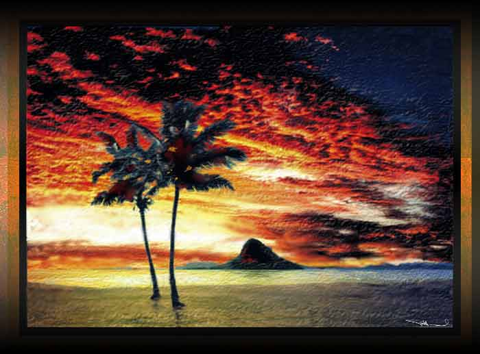

| Dawn Over Chinaman's Hat, Windward Oahu, Hawaii. Paintage: Pastel, watercolor, airbrush. This is a little island off the coast of windward Oahu that is a frequent gathering place for boaters and swimmers. For some artists this painting is over saturated and too hot. But, this is meant to be that kind of rich dawn we sometimes see in Hawaii, and I did not want to subdue it by over painting with a cool blue or gray. |